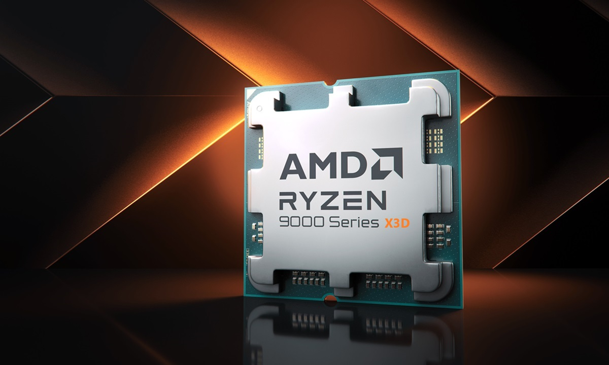
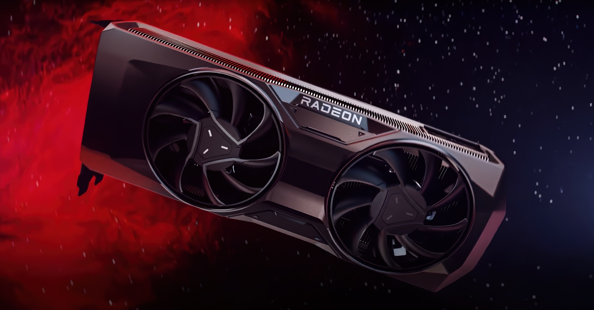
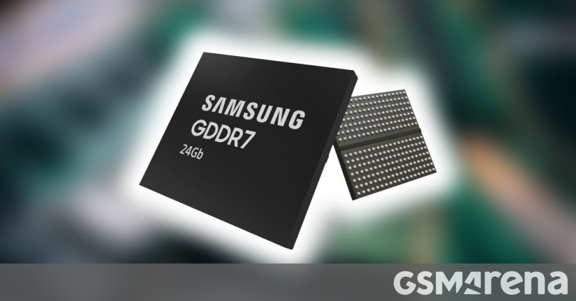
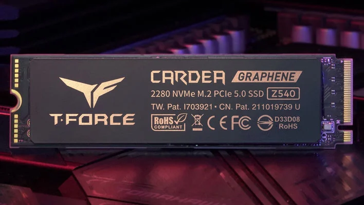
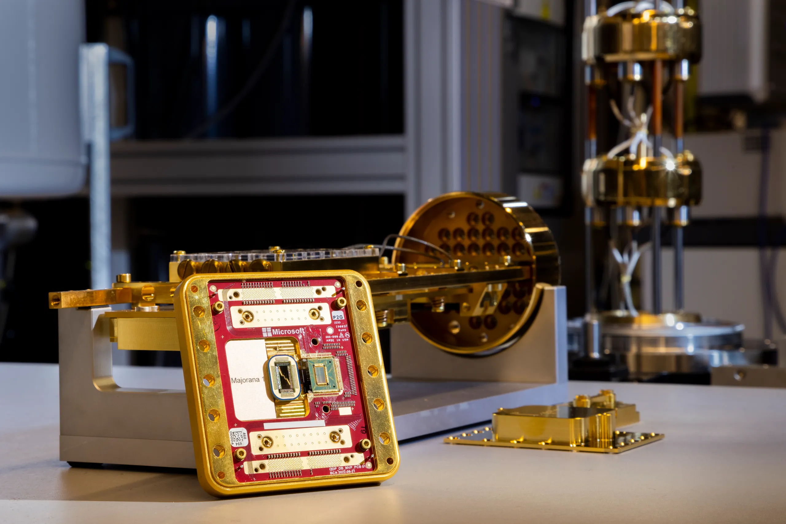
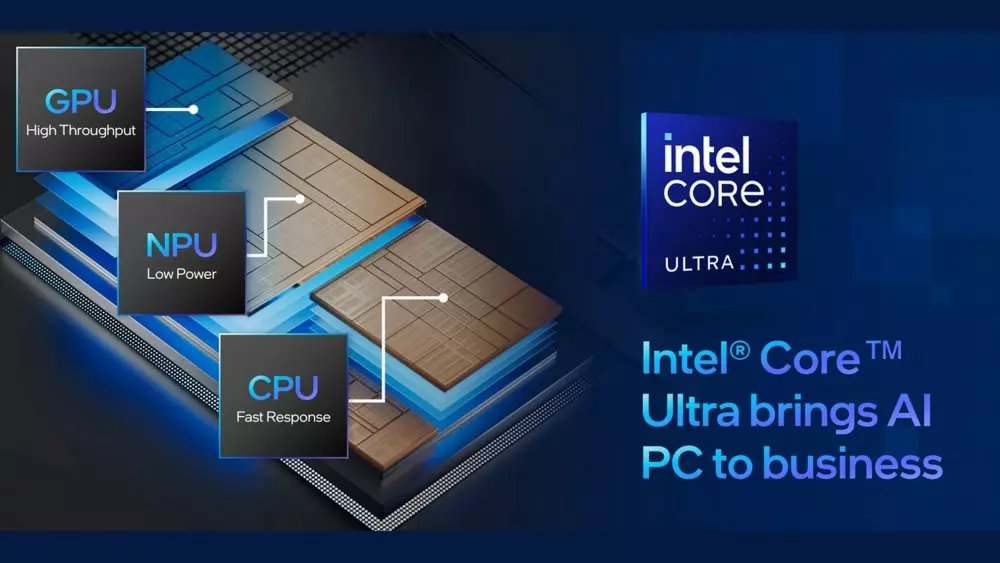
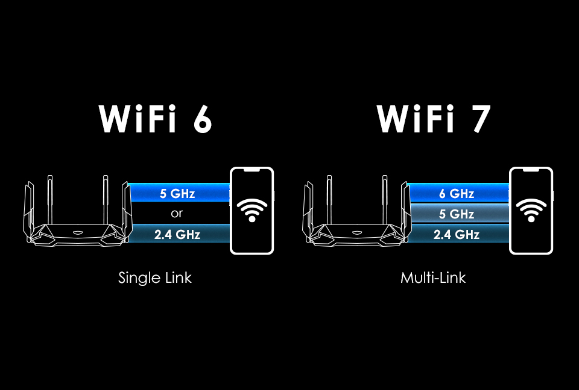
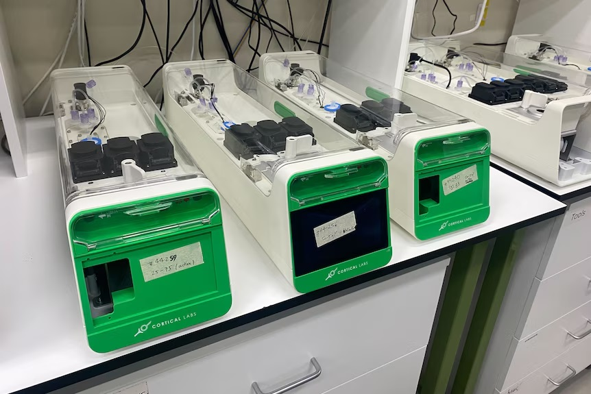

PROCESADORES Y UNIDADES DE PROCESAMIENTO GRÁFICOS
Las nuevas generaciones de procesadores han mejorado en eficiencia y potencia.
- Ryzen 9000X3D y Radeon RX 9000:
AMD ha lanzado sus nuevos procesadores Ryzen 9000X3D, que incorporan una mayor cantidad de memoria caché, mejorando el rendimiento en tareas intensivas. Además, la serie de GPU Radeon RX 9000 ofrece mejoras en eficiencia energética y rendimiento gráfico, siendo ideales para aplicaciones de inteligencia artificial y gaming de alta demanda.
- Intel Core Ultra:
Intel ha introducido la línea Core Ultra, diseñada para ofrecer un rendimiento superior en entornos multitarea y aplicaciones exigentes, manteniendo un consumo energético eficiente.


MEMORIAS Y ALMACENAMIENTO
Las memorias han evolucionado con nuevas tecnologías.
- DDR6 y GDDR7:
Las memorias DDR6 y GDDR7 están comenzando a implementarse, proporcionando mayores velocidades de transferencia y eficiencia, lo que se traduce en un rendimiento optimizado para aplicaciones que requieren un alto ancho de banda, como la realidad virtual y la inteligencia artificial.
- CAMM2:
El módulo de memoria comprimido (CAMM2) está emergiendo como el sucesor de los módulos SO-DIMM en portátiles, ofreciendo una mayor densidad y eficiencia en el consumo de energía.


COMPUTACIÓN CUÁNTICA
Grandes avances han sido presentados en la computación cuántica.
l
- Majorana 1 de Microsoft:
Microsoft ha desarrollado el chip cuántico Majorana 1, basado en una arquitectura de núcleo topológico que utiliza partículas de Majorana para crear cúbits más estables y escalables. Este avance promete acelerar la resolución de problemas complejos en campos como la sanidad y el medio ambiente.
- Ordenador Cuántico en España:
El Barcelona Supercomputing Center ha instalado el primer ordenador cuántico de acceso público en España, utilizando tecnología europea. Este sistema busca avanzar en la computación cuántica y su aplicación en diversas áreas, incluyendo la medicina y la inteligencia artificial.

INTELIGENCIA ARTIFICIAL Y PROCESAMIENTO
La inteligencia artificial está revolucionando el procesamiento de datos.
- NPU como Estándar:
Los procesadores de red neuronal (NPU) se están convirtiendo en componentes esenciales en las PC, permitiendo un procesamiento de inteligencia artificial más eficiente y local. Se espera que para 2029, el 100% de las PC integren NPU dedicadas.
- Aplicaciones Inteligentes:
La integración de técnicas de IA en dispositivos móviles y PCs está permitiendo que estos funcionen de manera más inteligente, adaptándose a las necesidades del usuario y mejorando la eficiencia operativa.

CONECTIVIDAD Y REDES
Los avances en redes han permitido mayor velocidad y eficiencia.
- Wi-Fi 7 y PCIe 6.0/7.0:
La adopción de Wi-Fi 7 y las nuevas versiones de PCI Express están mejorando la velocidad y eficiencia de la transferencia de datos, beneficiando aplicaciones que requieren alta capacidad de transmisión, como el streaming en 8K y la realidad aumentada.

INNOVACIONES DISRUPTIVAS
Las nuevas tecnologías están revolucionando la computación.
- Ordenador Orgánico CL1:
La startup australiana Cortical Labs ha presentado el CL1, el primer ordenador biológico comercial que utiliza neuronas humanas cultivadas en el laboratorio sobre un chip de silicio. Este dispositivo ejecuta código y realiza tareas informáticas de manera más eficiente y con menor consumo energético que los ordenadores tradicionales.

⬅ Volver al índice